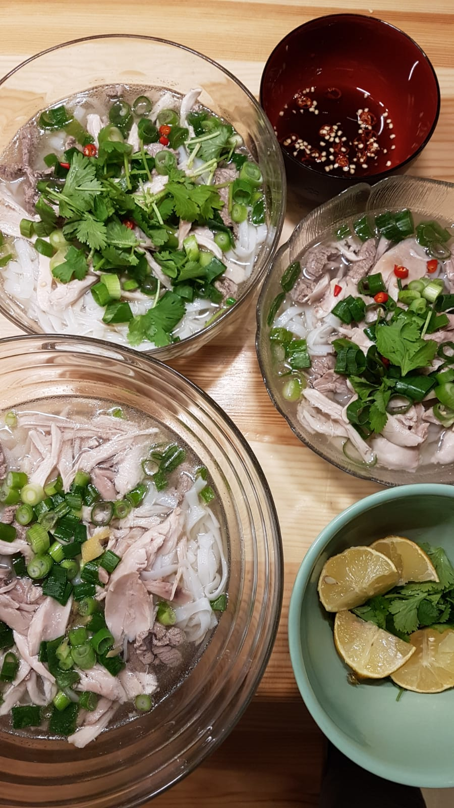

Phở is a Vietnamese beef noodle soup.
{kind=link}

Ingredients
For 3 people, you need:
- 300g beef eye fillet (de: Rinderfilet)
- 500g chicken legs (3 pieces)
- 500g rice noodles
- 8 spring onions
- 3 red onions
- Sprigs of fresh mint and/or Asian/Thai basil
- 3-5 star anise
- 25g ginger
- 4 red hot chili peppers
- 1 lemon
- 1 cinnamon stick
- Hoisin sauce (e.g. Lee Kum Kee brand)
- Fish sauce
- Sugar
- Salt
- 4L water
- For each person a rather big bowl
Tools
- A pot which can contain roughly 4L
- Ladle
- A sieve
- A small "sauce plate" (bowl) for sauce (less than 100ml)
Preparation
For all of the following, you will need roughly 1h.
Rice noodles:
- Put the rice noodles for 15min in warm water.
- Sieve the noodles out of the water and shock the noodles.
- Let the noodles dry.
- Pour boiling water over the noodles.
- Let the noodles dry.
Beef: Remove the sinews and cut it into approximately 3mm thin slices.
Broth:
- Peel the red onions - do not cut them, though!
- Put 4L of water in the pot and heat it until it is simmering.
- Put the chicken, 3 spring onions, the red onions, 2 chili peppers, the cinnamon stick, half a spoon of sugar and a bit of salt in the water. The chicken should be covered with water.
- Let it cook for 30min.
Preparations:
- Cut 5 of the 8 spring onions into small cylinders (roughly 5mm high)
- Remove the chicken from the broth, remove the skin, and cut it into bite-sized pieces
- Put the beef briefly in the bowl. You should see how the color of the beef changes from red to gray.
- Put a bit of fish sauce in the sauce plate and mix it with one chili pepper
Serve (for each person):
- Put some noodles in a bowl
- Pour broth over it
- Sprinkle some of the cut spring onions over the noodles
- Squeeze some lemon juice over the meal
- Put beef / chicken over the meal
- Decorate with the mint/basil
People can then put additional fish sauce in their bowl as they like.